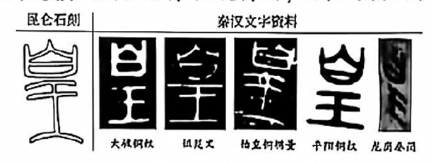

真题 · 实用类文本阅读
昆仑石刻的真伪之辨
文本展示公共学术论争中不同证据的作用，强调以文献比对和专业检测支持判断；对人物行程的还原则保留推测性质。
导读
文体与题材：新闻访谈；围绕昆仑刻石的真伪、史料价值与学术论争展开。
作者简介：高丹，本文采访者；刘钊，受访古文字学研究者。
文本出处：高丹：《刘钊〈发现昆仑石刻〉：一块石头掀起的学术风暴》，《澎湃新闻·文化课》，2026年6月2日。
内容脉络：报道先交代刻石公布后引起的多学科争议及调查结论，再通过访谈呈现刘钊对字形、刻凿和仿制问题的回应，最后转入采药行程的历史推测。
内容主旨：文本展示公共学术论争中不同证据的作用，强调以文献比对和专业检测支持判断；对人物行程的还原则保留推测性质。
阅读重点：区分记者的事实叙述、受访者的观点与假说；分析提问和回答的对应关系。
原文
原文按结构分节；随文内容可定位至对应段落。
事件缘起：刻石发现与多学科论争
一块刻有37个篆字的石头，在青海海拔4300多米的扎陵湖畔静卧了两千多年。2025年6月8日，当它的照片与释读文字公之于世，一场始料未及的学术风暴席卷了学术界。
中国社会科学院考古研究所研究员全涛将其定位为“秦始皇统一中国后唯一存于原址的刻石，同时也是保存最为完整的一处秦代刻石”。他公布识读结果：“皇帝／使五／大夫臣翳／將方士／采藥昆／陯翳以／廿六年三月／己卯車到／此翳□／前□可／一百五十／里。”意为：秦始皇廿六年，皇帝派遣五大夫翳率领一些方士，乘车前往昆仑山采摘长生不老药。他们于该年三月己卯日到达此地，再前行约一百五十里。文章发布后，质疑声迅速涌来。有历史学、民俗学等学科学者当天就公开在网上驳斥，认为是造假。随后更多学者加入质疑行列，提出历法问题、“采药”问题、字体问题、石刻位置问题、石刻风化程度问题等。
就在质疑声浪高涨之际，刘钊站了出来。经过对图片文字的研究，他从古文字角度分析，这篇篆文确实是秦朝人才能写得出来，他两次在学术公众号发文，将该石刻的文字与大量秦代出土文献的文字进行比对，证明是秦朝的文字。当时，他可谓是“正方一辩”。
《光明日报》专门设立“争鸣”栏目，支持和引导围绕昆仑石刻的学术辩论，发表各学科学者文章数十篇。截至2025年9月底，《光明日报》自有平台和社交账号中，用户生产内容及交互评论10000余条，微信平台参与讨论文章 4500 余篇，全网流量1.7亿人次。论争规模之大、范围之广，学术史中罕见。
经过充分讨论、实地考察和实验室研究，2025年9月15日，国家文物局在北京召开专题新闻发布会，正式确认该石刻为秦代石刻，定名为“尕日塘秦刻石”。
文字辨证：史料价值与字形比较
记者：你觉得这块石刻最大的价值是什么？
刘钊：它为秦始皇求仙采药这件事提供了全新的史料。以前我们知道他派徐福东渡，现在知道他西边也派了人。昆仑山的位置，在秦代就已经指向今天巴颜喀拉山脉那一带了。还有，这块石头是我国目前已知唯一存于原址且海拔最高的秦代刻石。“昆仑石刻”上面的每一道刻痕，都原封不动地保存着 2200多年前的全部信息，这个意义，怎么说都不过分。
记者：你第一眼看到石刻照片时是什么感觉？
刘钊：在我们研究古文字和出土文献的人来看，从字体写法到文本，可以说是一眼真。但后来有一件事让我惊出一身冷汗。（北京大学教授）董珊是我的学生，他提出来说里面的“皇”字写错了。秦朝有个《更名方》，“书同文”之后规定“皇”字上面“白”的横画不能和边框相接，要悬空。这个石刻上的“皇”字，那一横是跟两边接上的。如果他说得对，我就要重新站队，改变看法。我后来去查材料，发现了“皇”字并不全然遵循《更名方》。比如湖北云梦龙岗秦简里有两支编号相邻的简，“皇”字一个符合规定，一个就不符合。同一个人同时写的，可以写成这样，也可以写成那样，说明当时的人对这事并不太在意。我又查了很多秦诏版，那是秦始皇的诏书，按理说最高命令应该严格执行吧，结果也是两种写法都有。为什么？我认为一个原因是秦朝时间太短，法令还没贯彻就改朝换代了。另一个原因是交通不便，政令传到边远地区需要很长时间。邮政编码从推行到贯彻都用了十多年，这还是交通便利的现代社会。秦代的情况可想而知。所以董珊这个质疑虽然高级，但不能作为否定石刻的证据。

方法争议：科技检测与仿制辨析
记者：网上还有很多人质疑刻凿的字口太平整、像是电钻刻的，你怎么看？
刘钊：这些意见都不值得一驳。只有搞地质的人，研究岩画的人，或者会用现代科技检测石头残留物的人，才有资格说这样的话。随便瞎猜，不值一驳。至于说字写得太丑、不可能是古人手笔，这种观点更荒唐。秦代有写字写得漂亮的，也有写得丑的。五大夫翳不是书法家，他带的工匠也不是，为什么就不能写得丑？再说那个地方海拔四千多米，喘气都费劲，能刻下来就不错了。后来国家文物局组织了实验室的检测，从科技角度可以证实是秦朝凿刻的。
记者：有网友做了件刻文模仿石刻的秦朝痒痒挠，你还在书里专门分析它了，为什么？
刘钊：一般人看上去，觉得他造得挺像，那昆仑刻石也可能是假的。但是我就给你拆开剖析，他造的这件东西，凡是传世秦诏版和昆仑石刻里已经有的字，问题都不大，凡是昆仑石刻里没有的字，立刻就露馅了。“西”“出”“寻”“求”，写法都不对。你觉得它造得像，但在专业人眼里破绽百出。昆仑石刻你指得出破绽吗？你指不出来。我写这个不是为了驳一个玩笑，是为了纠正一种思维：觉得造假很容易。这种思维要不得。所以这个事儿必须批判。
历史重构：采药行程的推测
记者：现在想请您还原一下五大夫翳的采药之行。为什么要去？①________？②________？为什么要刻字？
刘钊：这个故事要从天象说起。秦始皇晚年出现了“荧惑守心”的天象，古人认为这对帝王不利。秦始皇就离开咸阳，全国到处跑，想躲开这个灾害。同时他觉得自己寿命不永了，就四处派人去采药求仙。派五大夫翳去昆仑山采药，就是其中一路。至于他是从咸阳出发，还是从陇西郡出发，陇西郡就是现在的兰州天水一带，我们不知道。但他走的路，很可能就是后来的“唐蕃古道”。文成公主进藏走的就是这条路。你看文成公主嫁给松赞干布，松赞干布在扎陵湖和鄂陵湖的岸边迎娶她。那个地方就是玛多县，唐蕃古道上的一个大驿站，要换马、吃饭、睡觉。再往西就是扎陵湖和鄂陵湖。所以我推测，五大夫翳也是沿着这条路走的。到了玛多县，再往西拐，就到了扎陵湖。那个地方海拔虽然高，但地势非常平坦，一望无际。他走到那里，靠着岩石休息，觉得这个任务很荣耀——皇帝派我出来采药，多大的事！他就灵机一动，刻下了这些字。就好像今天有人写日记，不是为了给别人看，是为了记录自己的荣耀时刻。没想到两千多年后被我们发现了。
第1题 · 内容理解
下列对原文相关内容的理解和分析，不正确的一项是（3分）
A．尕日塘秦刻石为秦始皇求仙采药提供新史料，引起学术界的广泛关注。
B．《光明日报》设立“争鸣”专栏，发表了辨析石刻真伪的多学科文章。
C．对石刻的热议已超出专业圈层，形成兼具学术性与大众性的文化事件。
D．各项争议得以平息后，国家文物局确认该石刻为秦代石刻并正式定名。
参考答案1展开 / 收起
参考作答
D
审题与考查点
逐项核验对象、范围、关系与语气；判断选项的完整命题是否成立。
文本分析
A项查看证据 ↗
符合。材料同时交代刻石的新史料价值和由此发生的广泛讨论，两个分句各有直接依据。
B项查看证据 ↗
符合。专栏的宗旨是引导讨论，所刊文章来自不同学科；选项没有把媒体组织讨论等同于媒体作鉴定。
C项查看证据 ↗
符合。公众生产内容、平台讨论和传播规模说明论争已越出学者之间的封闭交流；“文化事件”是对传播范围的合理概括。
D项查看证据 ↗
不符合。“经过充分讨论、实地考察和实验室研究”说明确认结论的工作过程，并未说所有争议已先行平息。选项把“调查后确认”改成“争议全消后确认”，增加了条件和全称范围。
知识点
参见信息转述与判断范围：结论获得正式确认，不蕴含所有争论已经终止。
解题方法
将D项拆成“争议全部平息—正式确认”的先后关系，检查原文是否同时提供这两件事。
易误辨析
准确复述某个词句，不代表整个选项成立；仍须检查该词句与结论之间的推导关系。
答案组织与检核
本题3分。按题干的正误方向作唯一选择；选项中的局部合理成分不能抵消关键错误。
第2题 · 内容理解
根据原文内容，下列说法正确的一项是（3分）
A．刘钊在报道中被称为“正方一辩”，表明他在学术论争中不仅率先坚持石刻为真，而且面对质疑也从未改变立场。
B．刘钊凭借着他对古文字学研究的专业积累，看到石刻照片时有了“一眼真”的直觉，但这不能直接作为认定依据。
C．刘钊发现秦代规定“书同文”而未必同文，原因是边远地区不受文字统一规范的约束，书写者可以自由地选择字形。
D．刘钊分析网友仿制的痒痒挠“已经有的字问题都不大”，意在说明仿造者功夫较深，仅凭字形细节已经难辨真伪。
参考答案2展开 / 收起
参考作答
B
审题与考查点
逐项核验对象、范围、关系与语气；判断选项的完整命题是否成立。
文本分析
A项查看证据 ↗
不符合。“正方一辩”概括其公开立场；“如果他说得对……改变看法”表明判断接受反证约束。“从未改变”还把文中有限过程扩展为绝对事实。
B项查看证据 ↗
符合。专业经验能形成初步判断，但报道列举的后续文献比对和检测才使判断具有可核验的理由；直觉本身不能替代证据链。
C项查看证据 ↗
不符合。受访者解释的是政令执行的时间和条件，不是边远地区依法免受规范约束。实施不充分与规范不适用属于不同命题。
D项查看证据 ↗
不符合。分析仿制品是要指出未照抄字形的破绽，从而纠正“造假容易”的观念；选项把反驳目的倒转为赞赏仿造水平。
知识点
参见科学文本中的证据与假说、反驳与回应。经验判断、证据支持和结论修正应分层处理。
解题方法
提取“如果”“我认为”“后来检测”等表达，确定每项判断的证据来源与确定程度。
易误辨析
准确复述某个词句，不代表整个选项成立；仍须检查该词句与结论之间的推导关系。
答案组织与检核
本题3分。按题干的正误方向作唯一选择；选项中的局部合理成分不能抵消关键错误。
第3题 · 访谈补写
根据原文内容，在横线处补写出恰当的语句，每处不超过10个字。（2分）
参考答案3展开 / 收起
参考作答
①他从哪里出发；②走的哪条路。
审题与考查点
补的是记者的两个问句。应由紧随其后的回答反推所问信息，并保留已给的问号。
文本分析
出发地点查看证据 ↗
“至于”引出的回答比较咸阳和陇西郡两个出发地，对应“他从哪里出发”。回答尚未确定，不影响问题本身成立。
行进路线查看证据 ↗
后文从“他走的路”转入唐蕃古道和扎陵湖的空间路线，故第二问须问道路，而不能重复问采药目的。
知识点
访谈中的相邻问答形成信息对应。参见访谈提问与追问。
解题方法
分别标出回答中的地点和路线，再写成简短疑问句，检查其与两侧既有问题不重复。
易误辨析
不能把推测路线直接填成“他走的是唐蕃古道吗”，否则把开放询问改成带预设的确认问题。
答案组织与检核
每空1分，共2分；每处不超过10字。
第4题 · 质疑标准
回应不同质疑时，刘钊的态度和方式并不相同。请结合材料，分析他判断“值得一驳”的标准。（6分）
参考答案4展开 / 收起
参考作答
①具有具体文献依据，可以通过同类材料检验；
②涉及专门技术的问题，应有与之匹配的专业方法和检测依据；
③即使起于玩笑，若造成“造假很容易”的公共误解，也有必要辨析。
审题与考查点
题目要求归纳“值得回应”的判据，不能只复述三个争论对象；又须区分受访者的措辞与可成立的方法论。
文本分析
文献能否相互检验查看证据 ↗
董珊提出《更名方》的字形规范，刘钊随即查秦简、诏版反证规范的实际执行情况。可检验的异议能促使原判断接受修正，因而值得认真回应。
方法是否适合对象查看证据 ↗
刻凿与风化属于物质遗存问题，需要地质、岩画或残留物检测等相应方法。可取的原则是证据与方法适配，而不是以非专业身份一概剥夺提问资格。
是否影响公共认识查看证据 ↗
仿制痒痒挠虽带玩笑性质，却诱发“形似即可轻易造假”的判断。刘钊逐字辨析，是在纠正由个别仿制向真伪鉴定作出的不当类推。
知识点
解题方法
按“争议—采用的证据或方法—回应理由”列三组，再将理由上提为标准。
易误辨析
“只有专家才可质疑”是对原答案“来自专业领域”的过强转述；“值得回应”也不等于该质疑最终正确。
答案组织与检核
原参考按三点各2分，共6分。每点应包含标准及对应事例。
第5题 · 命名意图
刘钊新著《发现昆仑石刻》把“尕日塘秦刻石”称为“昆仑石刻”，可能出于什么样的考虑？（4分）
参考答案5展开 / 收起
参考作答
①“昆仑”具有历史、神话与文化积淀，能突出石刻的文化价值；
②刻文记采药目的地为昆仑，命名贴近其核心内容；
③相较地方名“尕日塘”，“昆仑”更易为公众识别，有利于传播和讨论。
审题与考查点
“可能”要求有依据的意图推测，不能声称已知作者唯一的命名动机。
文本分析
文化内涵查看证据 ↗
访谈将昆仑与求仙采药及秦代地理认识相联系，因此书名能同时提示历史与文化问题。
题名与内容查看证据 ↗
刻文释义直接记述前往昆仑采药，故采用目的地命名，比仅复述发现地点更能概括内容。
传播辨识查看证据 ↗
材料展示大规模公众讨论；据此可以合理推测，文化辨识度较高的名称有助于读者进入议题。但材料未提供两名称传播效果的对照统计。
知识点
题名分析应结合指称对象、内容焦点与读者预期。参见标题意蕴与作用。
解题方法
由刻文内容和访谈重点提出两项直接理由，再以“可能”限定传播方面的推断。
易误辨析
学术性通称与正式定名可以并存，不能把书名解释为否定正式定名。
答案组织与检核
共4分；原参考答出任意两项，每项2分。
参考文献
- 南京市2027届高三年级学情调研，2026年9月，语文试题及参考答案。
- 高丹：《刘钊〈发现昆仑石刻〉：一块石头掀起的学术风暴》，《澎湃新闻·文化课》，2026年6月2日。
本文关联
引用本文
语文真经·古诗文阅读（第一期）4 处
阅读条目 →第1讲 · 古代汉语的文字 ↗《石门颂》的摩崖与汉隶 · 秦刻石“皇”字的变体 · 《劝学》“生”与“性”
第1讲 · 古代汉语的文字 ↗昆仑石刻的真伪之辨
第1讲 · 古代汉语的文字 ↗原文
第1讲 · 古代汉语的文字 ↗第4题
类比论证3 处
阅读条目 →昆仑石刻的真伪之辨 · 第4题选析 ↗研习任务：回应不同质疑时，刘钊的态度和方式并不相同。请结合材料，分析他判断“值得一驳”的标准。（6分）
昆仑石刻的真伪之辨 · 第4题选析 ↗文本依据：“不是为了驳一个玩笑”；“觉得造假很容易”。
昆仑石刻的真伪之辨 · 第4题选析 ↗查看完整解析与全部证据
汉字构形与六书1 处
阅读条目 →实例细读 ↗《昆仑石刻的真伪之辨》中受访者比较秦刻石、秦简、诏版里“皇”的不同写法。“一个符合规定，一个就不符合”说明同一时代的构形事实不能只凭一种规范字样裁断。读者还须区分材料所报告的字形比对，与据此作出的真伪判断。
反驳与回应4 处
阅读条目 →昆仑石刻的真伪之辨 · 第2题选析 ↗研习任务：根据原文内容，下列说法正确的一项是（3分） A．刘钊在报道中被称为“正方一辩”，表明他在学术论争中不仅率先坚持石刻为真，而且面对质疑也从未改变立场。 B．刘钊凭借着他对古文字学研究的专业积累，看到石刻照片时有了“一眼真”的直觉，但这不能直接作为认定依据。 C．刘钊发现秦代规定“书…
昆仑石刻的真伪之辨 · 第2题选析 ↗文本依据：“当时，他可谓是‘正方一辩’”；“如果他说得对，我就要重新站队，改变看法。”
昆仑石刻的真伪之辨 · 第2题选析 ↗文本依据：“从字体写法到文本，可以说是一眼真”；“我后来去查材料”；“后来国家文物局组织了实验室的检测”。
昆仑石刻的真伪之辨 · 第2题选析 ↗查看完整解析与全部证据
访谈提问与追问4 处
阅读条目 →昆仑石刻的真伪之辨 · 第3题选析 ↗研习任务：根据原文内容，在横线处补写出恰当的语句，每处不超过10个字。（2分）
昆仑石刻的真伪之辨 · 第3题选析 ↗文本依据：“至于他是从咸阳出发，还是从陇西郡出发”。
昆仑石刻的真伪之辨 · 第3题选析 ↗文本依据：“但他走的路，很可能就是后来的‘唐蕃古道’”
昆仑石刻的真伪之辨 · 第3题选析 ↗查看完整解析与全部证据
研究方法与问题4 处
阅读条目 →昆仑石刻的真伪之辨 · 第4题选析 ↗研习任务：回应不同质疑时，刘钊的态度和方式并不相同。请结合材料，分析他判断“值得一驳”的标准。（6分）
昆仑石刻的真伪之辨 · 第4题选析 ↗文本依据：“秦朝有个《更名方》”；“两种写法都有”。
昆仑石刻的真伪之辨 · 第4题选析 ↗文本依据：“研究岩画的人，或者会用现代科技检测石头残留物的人”；“后来国家文物局组织了实验室的检测”。
昆仑石刻的真伪之辨 · 第4题选析 ↗查看完整解析与全部证据
科学文本中的证据与假说4 处
阅读条目 →昆仑石刻的真伪之辨 · 第2题选析 ↗研习任务：根据原文内容，下列说法正确的一项是（3分） A．刘钊在报道中被称为“正方一辩”，表明他在学术论争中不仅率先坚持石刻为真，而且面对质疑也从未改变立场。 B．刘钊凭借着他对古文字学研究的专业积累，看到石刻照片时有了“一眼真”的直觉，但这不能直接作为认定依据。 C．刘钊发现秦代规定“书…
昆仑石刻的真伪之辨 · 第2题选析 ↗文本依据：“当时，他可谓是‘正方一辩’”；“如果他说得对，我就要重新站队，改变看法。”
昆仑石刻的真伪之辨 · 第2题选析 ↗文本依据：“从字体写法到文本，可以说是一眼真”；“我后来去查材料”；“后来国家文物局组织了实验室的检测”。
昆仑石刻的真伪之辨 · 第2题选析 ↗查看完整解析与全部证据
古文字与字体演变1 处
阅读条目 →秦刻石与同时期字形 ↗《昆仑石刻的真伪之辨》以秦代刻石和秦简、诏版的“皇”字互相校验。“也是两种写法都有”表明规范文本与实物书写未必完全一致。判断年代和真伪需综合器物、字形、文辞与科学检测；不能把当时某一规范写法视为全部出土文字的唯一形态。